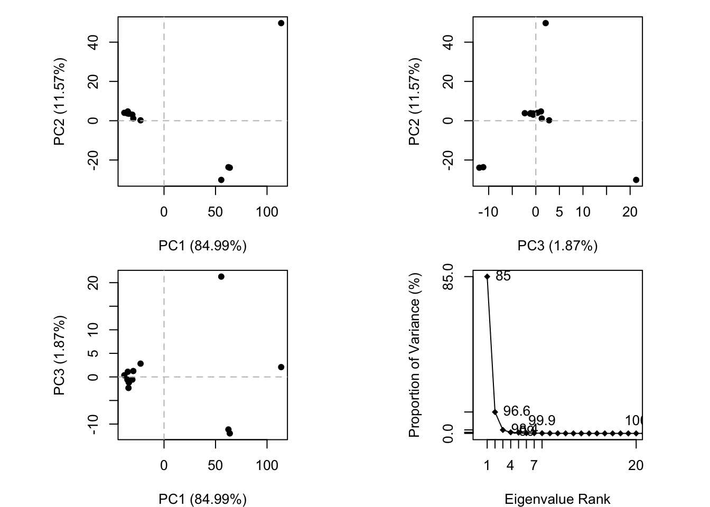
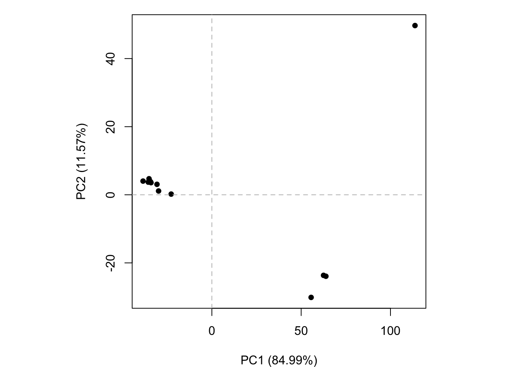

library(bio3d)
library(bio3dview)
library(ggplot2)
#BiocManager::install("msa")
library(msa)11042026_Class9_Part2_ComparitiveStructureAnalysis
Background
We will perform PCA of protein structureal data from the PDB.
get.seq() - input database identifier blast.pdb() or get.pdb() - find and dowload structures pdbaln() - align and superpose structures pca() - score plot
Set-up
let’s load all the packages we’re gonnna need FIRST.
Getting a sequence
Starting with a single sequence ID.
id <- "1ake_A"aa <- get.seq(id)Warning in get.seq(id): Removing existing file: seqs.fastaFetching... Please wait. Done.aa 1 . . . . . 60
pdb|1AKE|A MRIILLGAPGAGKGTQAQFIMEKYGIPQISTGDMLRAAVKSGSELGKQAKDIMDAGKLVT
1 . . . . . 60
61 . . . . . 120
pdb|1AKE|A DELVIALVKERIAQEDCRNGFLLDGFPRTIPQADAMKEAGINVDYVLEFDVPDELIVDRI
61 . . . . . 120
121 . . . . . 180
pdb|1AKE|A VGRRVHAPSGRVYHVKFNPPKVEGKDDVTGEELTTRKDDQEETVRKRLVEYHQMTAPLIG
121 . . . . . 180
181 . . . 214
pdb|1AKE|A YYSKEAEAGNTKYAKVDGTKPVAEVRADLEKILG
181 . . . 214
Call:
read.fasta(file = outfile)
Class:
fasta
Alignment dimensions:
1 sequence rows; 214 position columns (214 non-gap, 0 gap)
+ attr: id, ali, callQ10. Which of the packages above is found only on BioConductor and not CRAN?
Q11. Which of the above packages is not found on BioConductor or CRAN?:
Q12. True or False? Functions from the pak package can be used to install packages from GitHub and BitBucket?
# Blast or hmmer search
#b <- blast.pdb(aa)
# List out some 'top hits'
#head(hits$pdb.id)If blast did not return results (likely due to the large number of simultaneous requests from the class) you can use the following vector of PDB IDs
hits <- NULL
hits$pdb.id <- c('1AKE_A','6S36_A','6RZE_A','3HPR_A','1E4V_A','5EJE_A','1E4Y_A','3X2S_A','6HAP_A','6HAM_A','4K46_A','3GMT_A','4PZL_A')
# Download releated PDB files
files <- get.pdb(hits$pdb.id, path="pdbs", split=TRUE, gzip=TRUE)Warning in get.pdb(hits$pdb.id, path = "pdbs", split = TRUE, gzip = TRUE):
pdbs/1AKE.pdb.gz exists. Skipping downloadWarning in get.pdb(hits$pdb.id, path = "pdbs", split = TRUE, gzip = TRUE):
pdbs/6S36.pdb.gz exists. Skipping downloadWarning in get.pdb(hits$pdb.id, path = "pdbs", split = TRUE, gzip = TRUE):
pdbs/6RZE.pdb.gz exists. Skipping downloadWarning in get.pdb(hits$pdb.id, path = "pdbs", split = TRUE, gzip = TRUE):
pdbs/3HPR.pdb.gz exists. Skipping downloadWarning in get.pdb(hits$pdb.id, path = "pdbs", split = TRUE, gzip = TRUE):
pdbs/1E4V.pdb.gz exists. Skipping downloadWarning in get.pdb(hits$pdb.id, path = "pdbs", split = TRUE, gzip = TRUE):
pdbs/5EJE.pdb.gz exists. Skipping downloadWarning in get.pdb(hits$pdb.id, path = "pdbs", split = TRUE, gzip = TRUE):
pdbs/1E4Y.pdb.gz exists. Skipping downloadWarning in get.pdb(hits$pdb.id, path = "pdbs", split = TRUE, gzip = TRUE):
pdbs/3X2S.pdb.gz exists. Skipping downloadWarning in get.pdb(hits$pdb.id, path = "pdbs", split = TRUE, gzip = TRUE):
pdbs/6HAP.pdb.gz exists. Skipping downloadWarning in get.pdb(hits$pdb.id, path = "pdbs", split = TRUE, gzip = TRUE):
pdbs/6HAM.pdb.gz exists. Skipping downloadWarning in get.pdb(hits$pdb.id, path = "pdbs", split = TRUE, gzip = TRUE):
pdbs/4K46.pdb.gz exists. Skipping downloadWarning in get.pdb(hits$pdb.id, path = "pdbs", split = TRUE, gzip = TRUE):
pdbs/3GMT.pdb.gz exists. Skipping downloadWarning in get.pdb(hits$pdb.id, path = "pdbs", split = TRUE, gzip = TRUE):
pdbs/4PZL.pdb.gz exists. Skipping download
|
| | 0%
|
|===== | 8%
|
|=========== | 15%
|
|================ | 23%
|
|====================== | 31%
|
|=========================== | 38%
|
|================================ | 46%
|
|====================================== | 54%
|
|=========================================== | 62%
|
|================================================ | 69%
|
|====================================================== | 77%
|
|=========================================================== | 85%
|
|================================================================= | 92%
|
|======================================================================| 100%# Align releated PDBs
pdbs <- pdbaln(files, fit = TRUE, exefile="msa")Reading PDB files:
pdbs/split_chain/1AKE_A.pdb
pdbs/split_chain/6S36_A.pdb
pdbs/split_chain/6RZE_A.pdb
pdbs/split_chain/3HPR_A.pdb
pdbs/split_chain/1E4V_A.pdb
pdbs/split_chain/5EJE_A.pdb
pdbs/split_chain/1E4Y_A.pdb
pdbs/split_chain/3X2S_A.pdb
pdbs/split_chain/6HAP_A.pdb
pdbs/split_chain/6HAM_A.pdb
pdbs/split_chain/4K46_A.pdb
pdbs/split_chain/3GMT_A.pdb
pdbs/split_chain/4PZL_A.pdb
PDB has ALT records, taking A only, rm.alt=TRUE
. PDB has ALT records, taking A only, rm.alt=TRUE
. PDB has ALT records, taking A only, rm.alt=TRUE
. PDB has ALT records, taking A only, rm.alt=TRUE
.. PDB has ALT records, taking A only, rm.alt=TRUE
.... PDB has ALT records, taking A only, rm.alt=TRUE
. PDB has ALT records, taking A only, rm.alt=TRUE
...
Extracting sequences
pdb/seq: 1 name: pdbs/split_chain/1AKE_A.pdb
PDB has ALT records, taking A only, rm.alt=TRUE
pdb/seq: 2 name: pdbs/split_chain/6S36_A.pdb
PDB has ALT records, taking A only, rm.alt=TRUE
pdb/seq: 3 name: pdbs/split_chain/6RZE_A.pdb
PDB has ALT records, taking A only, rm.alt=TRUE
pdb/seq: 4 name: pdbs/split_chain/3HPR_A.pdb
PDB has ALT records, taking A only, rm.alt=TRUE
pdb/seq: 5 name: pdbs/split_chain/1E4V_A.pdb
pdb/seq: 6 name: pdbs/split_chain/5EJE_A.pdb
PDB has ALT records, taking A only, rm.alt=TRUE
pdb/seq: 7 name: pdbs/split_chain/1E4Y_A.pdb
pdb/seq: 8 name: pdbs/split_chain/3X2S_A.pdb
pdb/seq: 9 name: pdbs/split_chain/6HAP_A.pdb
pdb/seq: 10 name: pdbs/split_chain/6HAM_A.pdb
PDB has ALT records, taking A only, rm.alt=TRUE
pdb/seq: 11 name: pdbs/split_chain/4K46_A.pdb
PDB has ALT records, taking A only, rm.alt=TRUE
pdb/seq: 12 name: pdbs/split_chain/3GMT_A.pdb
pdb/seq: 13 name: pdbs/split_chain/4PZL_A.pdb #view.pdbs(pdbs)PCA
# Perform PCA
pc.xray <- pca(pdbs)
plot(pc.xray)
Looks like the first two PCs are plenty, cover 96% of variance.
plot(pc.xray, 1:2)
# view.pca(pc.xray)Write a wee movie (called a trajectory) for viewing in Mol* :
mktrj(pc.xray, file="pca_result.pdb")